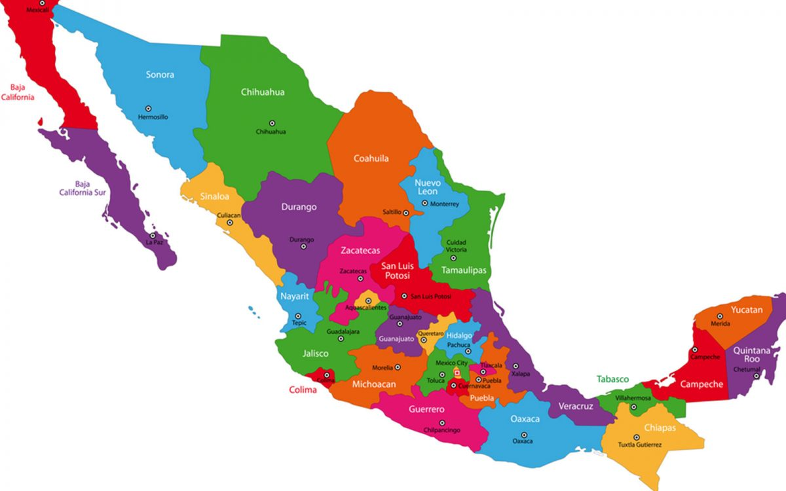
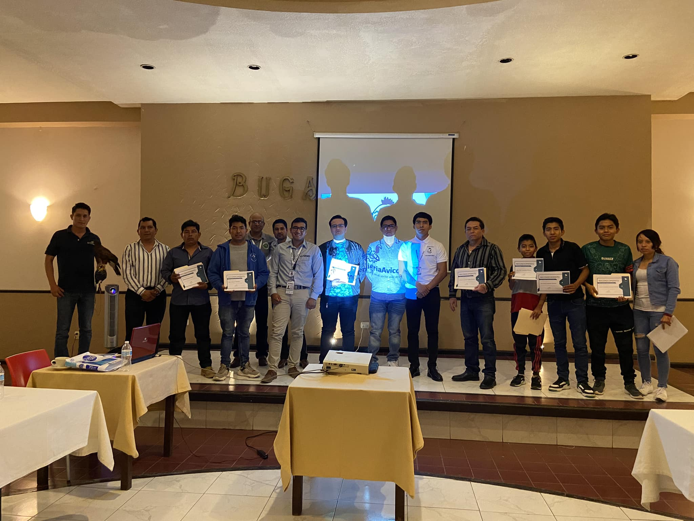
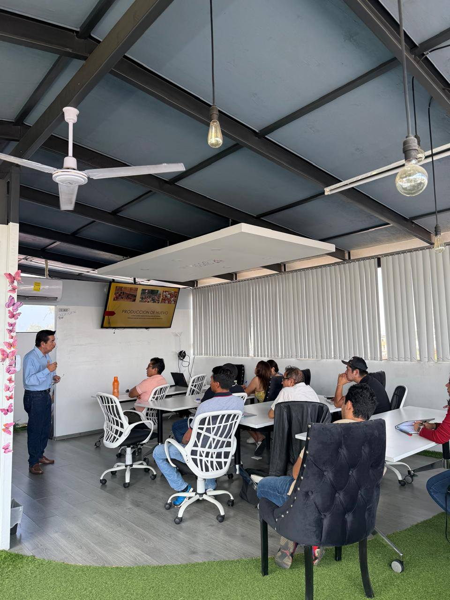
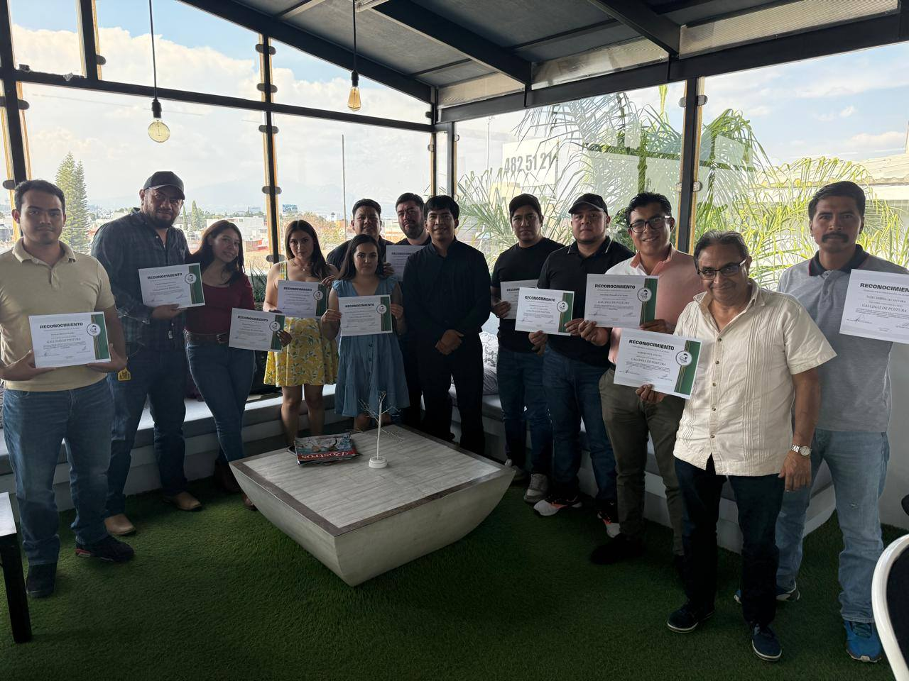
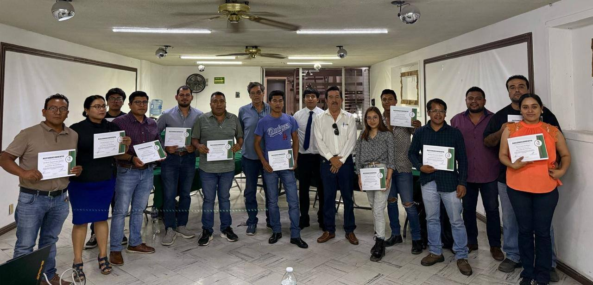
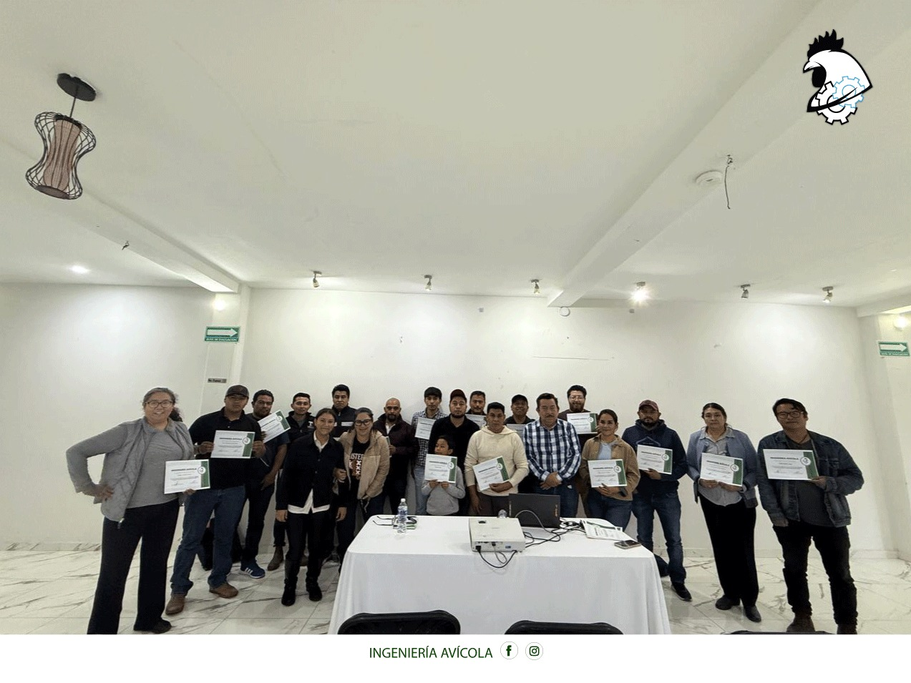
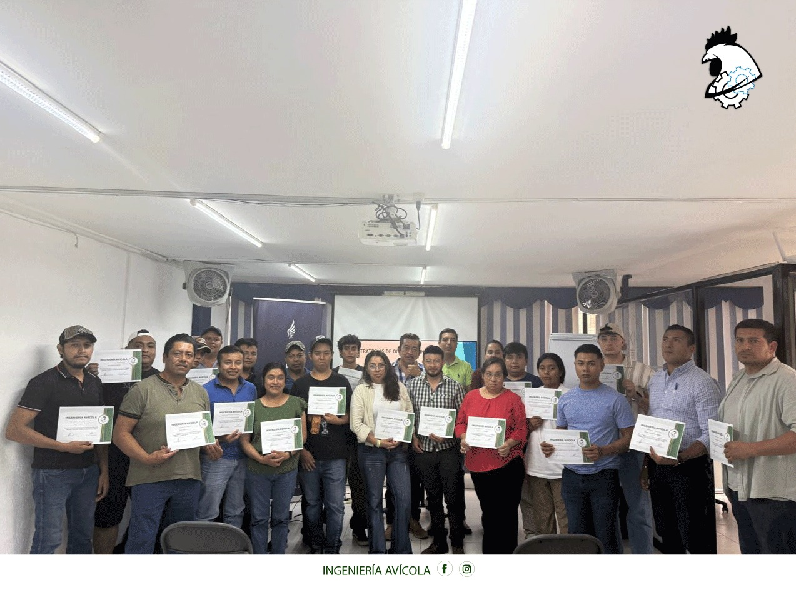

+52 236 113 8979
+52 236 113 8979 ingenieriaavicol@gmail.com
ingenieriaavicol@gmail.com Puebla, Veracruz, Oaxaca, Hidalgo, Morelos y Tabasco
Puebla, Veracruz, Oaxaca, Hidalgo, Morelos y Tabasco
Capacitación • Consultoría • Proyectos Avícolas
+1000Cursos impartidos
NacionalCapacitaciones y asesoría
6 estadosCobertura presencial
ProfesionalDesarrollo de proyectos
Más de 1000 cursos impartidos y proyectos avícolas profesionales en México
Capacitación especializada, cursos en línea y presenciales, asesoría profesional y proyectos avícolas en México.
Presencia nacional
Cursos en vivo y material de apoyo
Certificado con QR y folio
Marca especializada
Ingeniería Avícola
CursosProgramas técnicos y aplicables
InscripciónGrupo WhatsApp, clases y certificado
ProyectosPlaneación y acompañamiento avícola
PresenciaExperiencia real en México
Clases en vivo, acceso pregrabado y material de apoyo.
Con QR y folio para una mejor presentación profesional.
Autoridad de marca
Experiencia y respaldo para productores y emprendedores
Más de 1000 cursos impartidos respaldan una propuesta enfocada en capacitación, asesoría y proyectos avícolas con visión práctica y profesional.
Capacitación especializada
Programas diseñados para aprender, aplicar conocimientos y mejorar resultados productivos.
Desarrollo de proyectos
Planeación, acompañamiento y estructura para unidades productivas.
Imagen profesional
Una marca más fuerte, con mejor color, jerarquía visual y presencia.
¿Qué incluye tu inscripción?
Beneficios reales en cada capacitación
Beneficios claros para que el cliente vea rápidamente el valor del curso.
🎥
Clases en vivo
Sesiones explicadas paso a paso con enfoque técnico.
📹
Clases pregrabadas
Acceso a repeticiones o material complementario según el curso.
📲
Grupo de WhatsApp
Comunicación más directa para dudas e información importante.
🧾
Certificado QR y folio
Mayor presentación y respaldo al finalizar la capacitación.
📘
Material de apoyo
Recursos digitales para reforzar el aprendizaje.
🏅
Reconocimiento
Una experiencia más completa y mejor presentada.
Cursos especializados
Programas de capacitación diseñados para generar confianza
Explora cursos, revisa beneficios y solicita informes rápidamente.
 En línea
En línea
Manejo de gallinas de postura libre de jaula
Aprende el manejo técnico de gallinas de postura en sistemas alternativos, abordando bienestar animal, alimentación y producción de huevo.
Clases en vivo
Grupo de WhatsApp
Certificado QR y folio
 En línea
En línea
Administración avícola y crianza técnica
Fortalece la organización, planeación y manejo de unidades de producción avícola desde una perspectiva técnica y administrativa.
Clases en vivo
Grupo de WhatsApp
Certificado QR y folio
 En línea
En línea
Técnicas de sexaje en pollitas
Capacitación especializada para identificar el sexo de pollitas mediante métodos técnicos aplicados en campo.
Clases en vivo
Grupo de WhatsApp
Certificado QR y folio
 En línea
En línea
Producción y manejo técnico de gallinas de postura
Curso enfocado en la producción intensiva de gallinas de postura, desde el manejo diario hasta los indicadores clave de productividad.
Clases en vivo
Grupo de WhatsApp
Certificado QR y folio
 En línea
En línea
Bioseguridad avícola y control de enfermedades
Domina medidas preventivas y protocolos para reducir riesgos sanitarios y fortalecer el control de enfermedades avícolas.
Clases en vivo
Grupo de WhatsApp
Certificado QR y folio
 Presencial
Presencial
Manejo de gallinas de postura de traspatio
Capacitación práctica para personas interesadas en iniciar o mejorar un sistema de producción de postura de traspatio.
Clases en vivo
Grupo de WhatsApp
Certificado QR y folio
Mapa de cobertura
Capacitaciones en diferentes estados de México
Elegiste la opción de mapa, así que integramos una sección visual para reforzar presencia real en el país.

Cobertura presencial
Puebla, Veracruz, Oaxaca, Hidalgo, Morelos y Tabasco
Capacitaciones presenciales en estados seleccionados y atención en línea a nivel nacional.
Galería por estados
Cada imagen representa un estado visitado
Presencia real en diferentes estados de México.

Puebla
Capacitaciones presenciales y actividades de formación.

Veracruz
Experiencia de campo y programas de capacitación.

Oaxaca
Formación especializada y presencia regional.

Hidalgo
Cursos y actividades con enfoque técnico.

Morelos
Capacitación dirigida a productores y emprendedores.

Tabasco
Capacitación avícola y presencia en distintas regiones.
Testimonios
Experiencia que genera confianza
“La nueva propuesta visual deja mucho más claro que Ingeniería Avícola no solo imparte cursos, sino que tiene presencia, experiencia y valor real.”
Enfoque de marca“Ver los beneficios de inscripción, el mapa y la galería por estados hace que la página transmita mucho más autoridad.”
Percepción profesional
Siguiente acción
Ahora sí tienes una propuesta mucho más completa en todo el sitio
Solicita información y conoce cursos, proyectos y asesoría avícola.